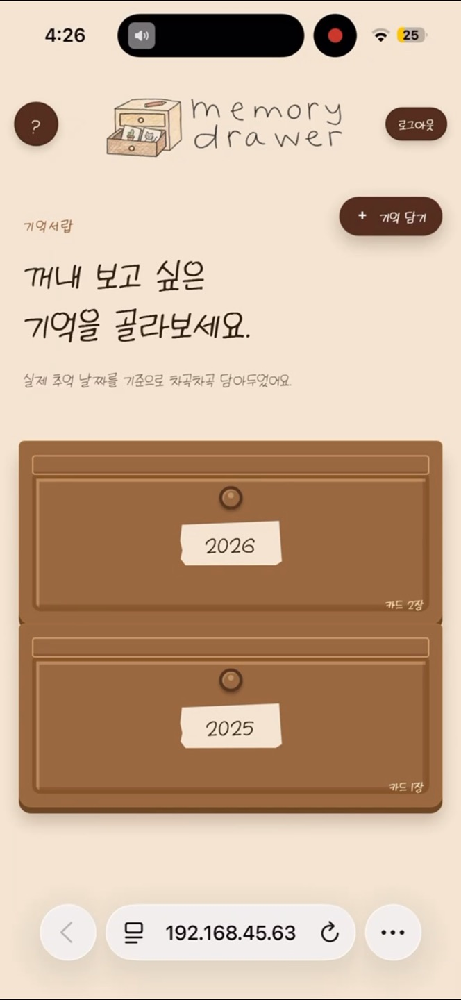
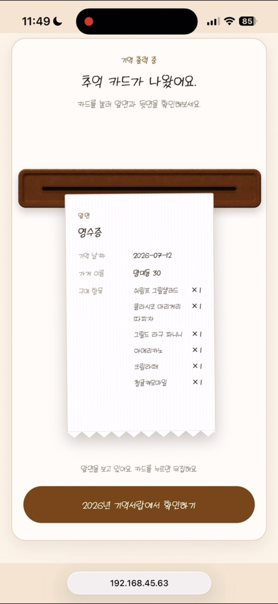
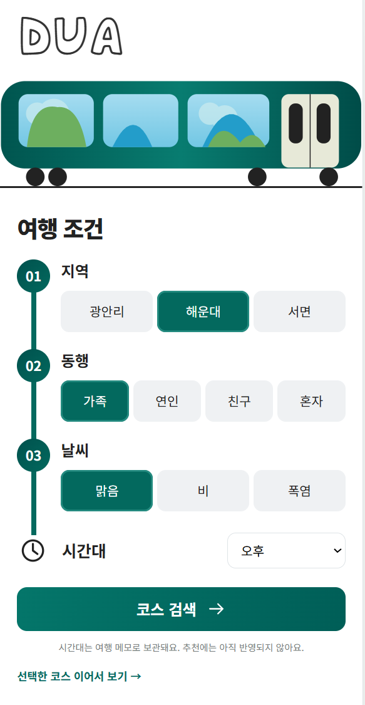
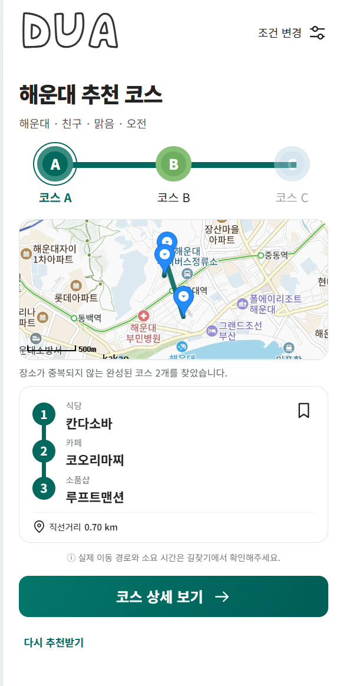
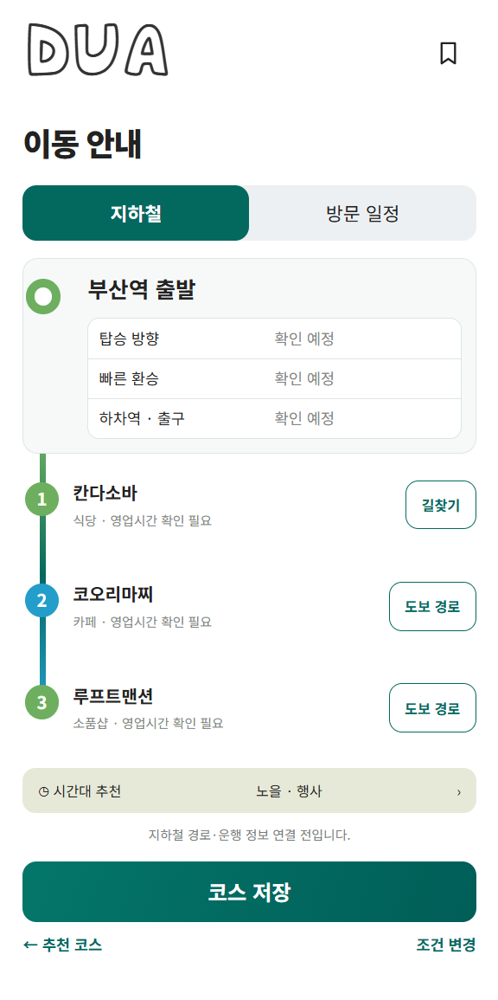

01저장은 실패했는데, 파일은 남는 문제
문제
카드 저장 중 오류가 나면 업로드한 이미지 파일이 남을 수 있었습니다.
해결
저장 실패 시 잔여 파일을 정리하도록 보완했습니다. 이미지 조회에는 인증·소유권 검증을 연결했습니다.
정보컴퓨터공학부 인공지능전공 · 25학번 강소현
프론트엔드와 백엔드를 경험하며, 하나의 서비스를 더 넓게 이해하고 있습니다.
사용자의 선택이 화면과 서버를 거쳐 결과로 돌아오는 과정을 구현하며 DUA의 프론트엔드에서 시작해 기억서랍의 백엔드와 서비스 통합까지 경험했습니다.
화면 설계·구현과 상태 관리
React/Vite 프론트엔드 연동
Spring Boot 인증·문서 분석
API 통합·예외 처리
GitHub · API 명세
Postman · 통합 흐름 확인
영수증·티켓·손편지를 분석하고, 사용자가 확인한 정보와 감정을 추억 카드로 저장하는 서비스입니다. 완성한 카드는 추억 날짜에 따라 연도별 서랍에 모았습니다.


4명이 기획과 프론트엔드·백엔드 개발을 나눠 진행했습니다. 문서 분석, 회상 답변, 추억 카드 저장과 서랍 조회를 연결해 모바일 웹 MVP를 만들었습니다.
카드 저장 중 오류가 나면 업로드한 이미지 파일이 남을 수 있었습니다.
저장 실패 시 잔여 파일을 정리하도록 보완했습니다. 이미지 조회에는 인증·소유권 검증을 연결했습니다.
회상 제목이 답변을 단순 나열해, 하나의 장면으로 읽히지 않았습니다.
나열형 결과를 검증하고 한 차례 재생성했습니다. 재생성 후에도 부적합하면 직접 입력으로 이어지도록 구성했습니다.
서랍에 카드가 몰리면 개별 기록을 구분하기 어려웠습니다.
기존 카드와 멀리 떨어진 빈 위치를 우선 선택하도록 배치를 변경해, 서랍 전체에 카드를 분산했습니다.
실제 API로 저장·조회를 확인했습니다. 당시 통합 기록 기준 백엔드 91개·프론트엔드 27개 테스트를 통과했습니다.
공개 배포 전 로컬 MVP입니다. Codex를 구현·테스트에 활용했으며, 기능 범위와 수정 기준은 직접 결정했습니다.
지역·동행·날씨에 맞는 부산 여행 코스와 지하철 이동 안내를 함께 제공하는 서비스입니다. 조건 선택·코스 비교·장소 상세 화면을 구현했으며, 승차·환승·출구 정보를 확인하는 이동 안내를 연결하고 있습니다.



조건 선택 → 추천 코스 → 지하철 이동 안내 · 개인 작업본
8명이 기획·답사·초기 설계를 진행했습니다. 장소와 이동 조건을 조사해 여행 코스와 지하철 동선을 함께 안내하는 흐름을 기획하고, 추천 API와 화면·지도를 연결했습니다.
문제와 해결
페이지 이동·새로고침으로 조건과 코스가 초기화되면 같은 검색을 반복해야 했습니다.
검색 조건·추천 결과·선택 코스를 sessionStorage에 저장했습니다. 이전 화면으로 돌아와도 선택한 조건과 코스를 이어서 볼 수 있도록 복원했습니다.
와이어프레임대로 구현한 뒤 실제 화면을 보니, 구성과 정보 배치를 다시 다듬을 필요가 있었습니다.
여행 조건 선택 → 추천 코스 → 지하철 이동 안내 순서로 화면을 다시 구성했습니다. 각 단계에서 필요한 코스와 이동 정보를 확인하도록 배치를 수정했습니다.
추천·비교·상세 화면과 상태 복원을 구현했습니다. 지하철 승차·환승·출구 동선 안내는 구현 중입니다.
현재 지도 연결선·거리는 직선 기준이며, 실제 길찾기는 외부 카카오맵으로 연결합니다.